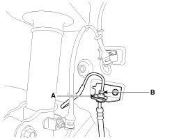
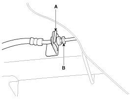
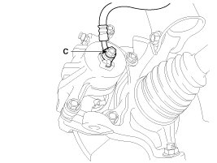
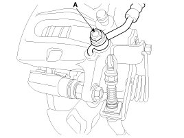
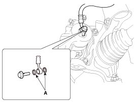
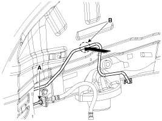
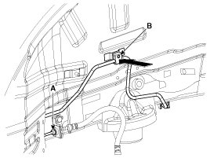

Repair Procedures
Removal
1. Disconnect the brake fluid level switch connector, and remove the reservoir cap.
2. Remove the brake fluid from the master cylinder reservoir with a syringe.
CAUTION:
Do not spill brake fluid on the vehicle, it may damage the paint; if brake fluid does contact the paint, wash it off immediately with water.
3. Remove the wheel & tire.
4. Remove the brake hose clip (A).
Front

Rear

5. Disconnect the brake tube by loosening the tube flare nut (B).
Tightening torque:
12.7 - 16.7 N.m (1.3 - 1.7 kgf.m, 9.4 - 12.3 lb-ft)
6. Disconnect the brake hose from the brake caliper by loosening the bolt (C).
Tightening torque:
24.5 - 29.4 N.m (2.5 - 3.0 kgf.m, 18.1 - 21.7 lb-ft)
Front

Rear

Inspection
1. Check the brake tubes for cracks, crimps and corrosion.
2. Check the brake hoses for cracks, damage and fluid leakage.
3. Check the brake tube flare nuts for damage and fluid leakage.
4. Check brake hose mounting bracket for crack or deformation.
Installation
1. Installation is the reverse of removal.
CAUTION:
Use a new washer (A) whenever installing.

CAUTION:
When installing the RH rear brake hose, the brake tube must not be touched to the tire.
1. Without the brake tube fixing clip
- When tightening the brake tube flare nut (A), tighten it with a specified torque by pushing it toward the car body not to damage to the brake tube (B).
Tightening torque :
12.7 - 16.7 N.m (1.3 - 1.7 kgf.m, 9.4 - 12.3 lb-ft)

- After installation, check that the brake tube must not be touched to the tire.
2. With the brake tube fixing clip
- Insert the brake fixing clip (B) to the end after fixing the brake tube to the brake tube fixing clip (B).

- Tighten the brake tube flare nut (A) with a specified torque.
Tightening torque :
12.7 - 16.7 N.m (1.3 - 1.7 kgf.m, 9.4 - 12.3 lb-ft)
- Check again that the brake tube fixing clip (B) must be fixed in place.
2. After installation, bleed the brake system.
3. Check the spilled brake oil.